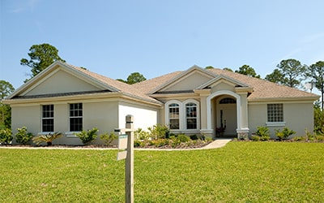

INFRASTRUCTURE
INFRASTRUCTUREWhy proper drainage protects communities
How early assessment and thoughtful design prevent avoidable infrastructure failure.
MES insights
Practical perspectives on infrastructure, housing, approvals, estate management, and sustainable community development.
INFRASTRUCTUREHow early assessment and thoughtful design prevent avoidable infrastructure failure.

ESTATE MANAGEMENTMaintenance planning and accountability practices that keep shared spaces working.
 DEVELOPMENT
DEVELOPMENTWhat long-term value looks like when technical decisions include social needs.